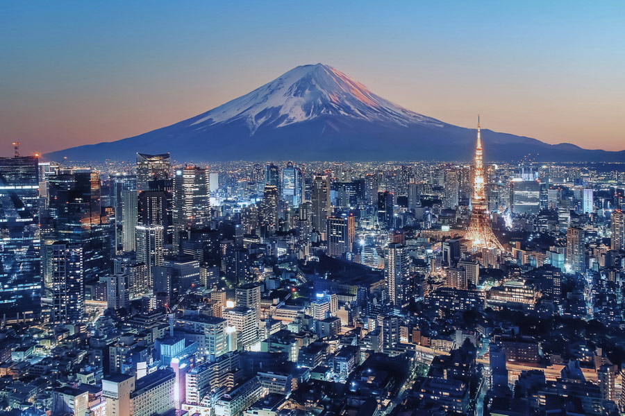

Capitale animée du Japon, Tokyo associe ultramoderne et traditionnel, gratte-ciels illuminés et temples historiques.
L'opulent sanctuaire shinto Meiji est réputé pour son imposant portail et les bois qui l'entourent .
Le palais impérial (ou Kōkyo) est installé dans de vastes jardins publics.
Les nombreux musées de la ville proposent des expositions allant de l'art classique (musée national de Tokyo) à la reconstitution d'un théâtre kabuki (musée d'Edo-Tokyo).
